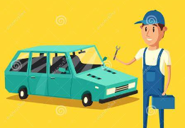

The information covered in this page will tell you all you need to keep your vehicle up and running.
Your vehcile is in need of some assistance
this page will cover many topics such as.
by checking fluids regularly you will gain an idea of how quickly they are deteriorating. this can be a good indicator if something is wronge with the vehicle or if it is time to have the fluids changedchecking air filters
Your vehicle needs a clean source of air to provide combustion. Make sure to check your air filter regularly to prevent contamination. after removing the air filter from the vehicle hold it up to a lightsource. If you cannot visibly see any light coming through the airfilter it is time to replace it with a new one.checking the battery
by visually inspecting your battery you can check for leaks and built up battery acid. dimming lights or guages are also a good indicator that their may be a problem in the vehicles electrical system. If you notice any of the occurences take your vehicle to a trusted mechanic to be further diagnosedchecking brakes
the breaks on a vehicle are undoubtably one of the biggest safety factors. if you hear a noise while driving from your brakes They should be checked by a professional immediatelymaintenace lights
these are lights that become illuminated on the vehicles dashboard when the vehicle has passed the scheduled milage for the maintenace concern. When these lights turn on be sure to take your vehicle in at your earliest convience to get servicedCheck engine light
this light becomes illuminated when their is some form of problem with the vehicle. When this light comes on take it to a mechanic immediately to be diagnosed and fixed.